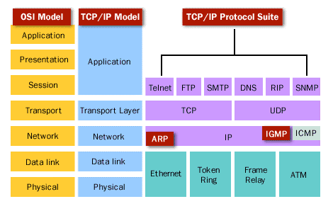
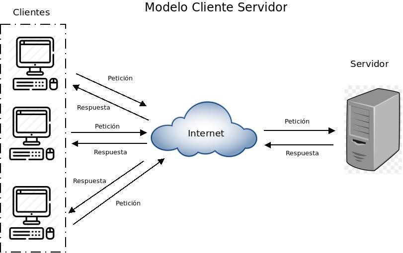
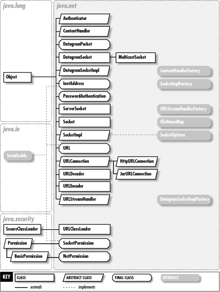
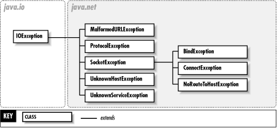

# Repaso parte 3 - Conceptos básicos de redes
## Pila de protocolos
La comunicaciones de red se dividen en capas, cada capa hace un trabajo especifico y evita que haya que implementar ese mismo trabajo en otras capas. En estos temas nos centraremos en la capas TCP/IP de **transporte y aplicación**.



# Capa transporte

Esta capa se encarga de la transferencia libre de errores de los datos entre el emisor y el receptor, aunque no estén directamente conectados. La meta final de la capa de transporte es proporcionar un servicio eficiente y confiable a los usuarios, que normalmente son procesos de la capa de aplicación. Existen dos conceptos muy importantes en esta capa:
- Protocolo de conexion, que puede ser TCP  o UDP
- Puertos de comunicación.

## Protocolo TCP
Es un protocolo **orientado a conexión** que significa que antes de iniciar la comunicación entres dos procesos se verifican determinados datos (disponibilidad, alcance, etc.) entre estas entidades y se negocian unas credenciales para hacer esta conexión más segura y eficiente.

Esto supone mayor carga de trabajo a una red (y tal vez retardo), pero aportan la eficiencia y fiabilidad necesaria a las comunicaciones que la requieran. Aspectos a tener en cuenta:
- El establecimiento de conexión entre emisor y receptor se conoce como **3-way handshake**
- Por cada cada recibido el receptor envía un ACK para confirmar que lo ha recibido. Si el emisor no recibe el ACK de un dato asume que no se ha recibido y lo volverá a enviar.


## Protocolo UDP
Es un protocolo **no orientado a la conexión** que significa que la comunicación entre dos procesos es enviada sin acuerdo previo. El dispositivo en un extremo de la comunicación transmite los datos al otro sin asegurarse de que el receptor esté disponible y listo para recibir los datos. Tampoco permite verificar la correcta recepción de destinatario.

Esto supone una menor carga de trabajo en la red y mayor agilidad de comunicación, en detrimento de la fiabilidad de la conexión. Es un potrocolo útil que llamadas de VoIP donde prima la fluidez de la comunicación mas que la seguridad. ¿De que nos serviria recuperar un dato no recibido en una conversación si se recupera unos segundos después?

## Puertos de comunicación
Si en un mismo equipo estamos recibiendo información correspondiente a distintas aplicaciones Chrome, Spotify, etc. ¿Como distinguimos a que proceso corresponde cada información?

El concepto de puerto es una división lógica de la comunicación. Esta división permite mantener conexión simultaneas con distintos equipos, y tener distintas aplicaciones comunicándose. Se asignará un puerto de comunicación a cada proceso para poder identificar cada uno de los segmentos que llegan o enviamos. Los puertos se representan mediante 16 bits por lo que los números de puertos van desde el 0 al 65536.

Tanto en TCP como en UDP enviamos dos campos **puerto de origen** y **puerto de destino**:
- El puerto de origen lo utilizará el receptor para respondernos a ese puerto y nuestro ordenador sepa a que proceso corresponde esa respuesta.
- El puerto de destino lo indica el emisor y el receptor lo utiliza para  saber con que proceso quieres comunicarte.

**¿Como sabemos que puerto de destino utilizar?**
Cada protcolo de comunicación tiene un puerto asociado, de esta forma sabemos que puerto utilizar.

Por ejemplo, un servidor web que utiliza el protocolo HTTP utiliza el puerto 80. Es decir, cuando escribimos una dirección en el navegador nuestro ordenador se comunica con el puerto 80 del servidor web. En caso que fuera, HTTPS seria el puerto 443.

Algunos puertos de destino conocidos son:
- FTP: 20 y 21
- TELNET: 23
- HTTP: 80 o 8080(para desarrollo)
- HTTPS: 443
- POP3: 110
- SSH: 22
- DNS: 53

# Capa aplicación
Son los programas o aplicaciones que utilizamos. Aqui se definen los protocolos de comunicación. En otras palabras, como funciona HTTP o como funciona SMTP si lo que queremos es programar un navegador web o un cliente de correo electrónico respectivamente.

# Otros conceptos de redes
## Tipos de envío de información
Existen tres formas de coumicarnos:

- **Unicast**: Envío a un solo destino. Usado por los protocolos TCP y UDP
- **Multicast**: Envío a un grupo de destinos. Usado solo el protocolo UDP
- **Broadcast**: Envío a todos los destinos posibles de la red del host emisor. Usado por el protocolo UDP.

## Arquitectura cliente - servidor
Es un modelo de diseño de software en el que las tareas se reparten entre los proveedores de recursos o servicios, llamados servidores, y los demandantes, llamados clientes. Un cliente realiza peticiones a otro programa, el servidor, quien le da respuesta.



El conceto general es que el servidor juega un papel pasivo, siempre esta encendido esperando la peticion de un cliente. Cuando la recibe le contesta.
Por otro ladoel cliente juega un papel activo, ya que inicia la comunicacion con el servidor.
 

# Java y las redes

El paquete java .net contiene clasese interfaces que proporcionan una infraestructura para programar aplicaciones en red:



- La clase **URL** para acceso básico.
- La clase **URLConnection** que da soporte a operaciones mas complejas.
- La clase **InetAddress** que representa una direcciones de Internet
- La clase **Socket** para conectarnos a un puerto especifico de un servidor. Podemos enviar y recibir información a través de streams.
- La clase **ServerSocket** para implementar un servidor que acepte conexion de clientes.
- La clase **DatagramSocket, MulticastSocket, y DatagramPacket** para trabajar con conexiones a bajo nivel.

Las excepciones del paquete java .net
